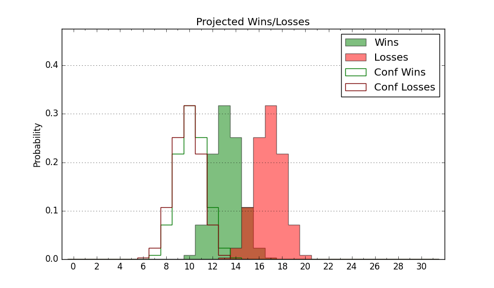

| Home | Game Probabilities | Conferences | Preseason Predictions | Odds Charts | NCAA Tournament |
| City: | Fairfield, Connecticut | |
| Conference: | Metro Atlantic (5th)
| |
| Record: | 7-6 (Conf) 10-13 (Overall) | |
| Ratings: | Comp.: -11.6 (286th) Net: -11.5 (285th) Off: 102.9 (227th) Def: 114.3 (312th) SoR: 0.0 (123rd) |
| Remaining | ||||||
|---|---|---|---|---|---|---|
| Date | Opponent | Win Prob | Pred. | |||
| 2/16 | Siena (250) | 56.9% | W 76-74 | |||
| 2/21 | @ Merrimack (195) | 18.6% | L 65-75 | |||
| 2/23 | @ Saint Peter's (281) | 34.5% | L 67-71 | |||
| 2/28 | Marist (234) | 52.2% | W 71-70 | |||
| 3/2 | Fairfield (348) | 82.2% | W 83-72 | |||
| 3/6 | @ Manhattan (282) | 34.5% | L 79-84 | |||
| 3/8 | @ Iona (295) | 37.5% | L 74-78 | |||
| Previous | Game Score | |||||
| Date | Opponent | Win Prob | Result | Off | Def | Net |
| 11/4 | @Temple (151) | 13.7% | L 70-81 | -12.1 | 12.8 | 0.7 |
| 11/6 | @Connecticut (31) | 1.7% | L 56-92 | -18.0 | 5.9 | -12.0 |
| 11/9 | @Dartmouth (216) | 21.1% | L 76-81 | 1.2 | 5.4 | 6.6 |
| 11/15 | (N) Holy Cross (311) | 56.8% | L 75-82 | 7.4 | -21.6 | -14.2 |
| 11/16 | (N) New Hampshire (356) | 79.9% | W 80-63 | 5.7 | 3.8 | 9.5 |
| 11/17 | @Brown (220) | 21.6% | L 70-89 | 3.8 | -21.0 | -17.2 |
| 11/21 | Central Connecticut (181) | 40.7% | W 67-54 | -2.2 | 24.1 | 21.9 |
| 12/1 | @Boston University (310) | 41.4% | W 73-65 | 4.1 | 14.7 | 18.8 |
| 12/6 | Iona (295) | 67.2% | W 83-59 | 4.3 | 18.4 | 22.7 |
| 12/8 | @Quinnipiac (213) | 21.0% | L 73-83 | 2.6 | -4.0 | -1.4 |
| 12/18 | Albany (291) | 66.0% | L 66-74 | -18.3 | 2.2 | -16.1 |
| 12/22 | @Miami OH (185) | 17.3% | L 76-94 | -1.5 | -6.4 | -7.9 |
| 1/5 | Canisius (360) | 90.0% | W 99-82 | 18.1 | -13.8 | 4.2 |
| 1/10 | Merrimack (195) | 43.7% | L 65-66 | -13.0 | 6.2 | -6.8 |
| 1/12 | @Mount St. Mary's (275) | 32.9% | L 71-73 | 0.5 | 5.8 | 6.4 |
| 1/16 | @Siena (250) | 28.0% | L 75-93 | 8.6 | -20.3 | -11.7 |
| 1/18 | Saint Peter's (281) | 64.2% | L 61-66 | -16.6 | 3.3 | -13.4 |
| 1/23 | @Canisius (360) | 72.5% | W 93-84 | 14.8 | -8.9 | 5.9 |
| 1/25 | @Niagara (327) | 46.7% | W 86-77 | 24.2 | -7.5 | 16.6 |
| 2/2 | Manhattan (282) | 64.2% | W 74-72 | -18.4 | 17.6 | -0.7 |
| 2/6 | Rider (325) | 74.4% | W 89-77 | 13.9 | -4.2 | 9.8 |
| 2/8 | @Fairfield (348) | 57.6% | W 77-71 | -0.4 | 5.8 | 5.4 |
| 2/14 | Quinnipiac (213) | 47.5% | L 90-99 | 2.6 | -10.1 | -7.5 |
| Stats & Trends | |||||
|---|---|---|---|---|---|
| Current | Day | Week | Month | Season | |
| Composite | -11.6 | +0.1 | -0.4 | +0.6 | +6.5 |
| Comp Rank | 286 | +2 | -8 | +5 | +58 |
| Net Efficiency | -11.5 | +0.1 | -0.4 | -0.2 | -- |
| Net Rank | 285 | +1 | -8 | -5 | -- |
| Off Efficiency | 102.9 | +0.1 | +0.2 | +1.6 | -- |
| Off Rank | 227 | -3 | -1 | +11 | -- |
| Def Efficiency | 114.3 | +0.0 | -0.6 | -1.7 | -- |
| Def Rank | 312 | +5 | -8 | -14 | -- |
| SoS Rank | 351 | +2 | +5 | -15 | -- |
| Exp. Wins | 13.2 | -0.0 | -0.5 | +0.8 | +3.6 |
| Exp. Conf Wins | 10.2 | -0.0 | -0.5 | +0.8 | +3.3 |
| Conf Champ Prob | 0.1 | +0.0 | -0.2 | -0.2 | -0.9 |

| Advanced Stats | ||
|---|---|---|
| Stat | Value | Rank |
| Off Eff FG % | 0.498 | 211 |
| Off Ast Ratio | 0.153 | 131 |
| Off ORB% | 0.263 | 250 |
| Off TO Rate | 0.158 | 251 |
| Off FT Ratio | 0.277 | 319 |
| Def Eff FG % | 0.556 | 333 |
| Def Ast Ratio | 0.182 | 358 |
| Def ORB% | 0.298 | 226 |
| Def TO Rate | 0.142 | 227 |
| Def FT Ratio | 0.324 | 160 |